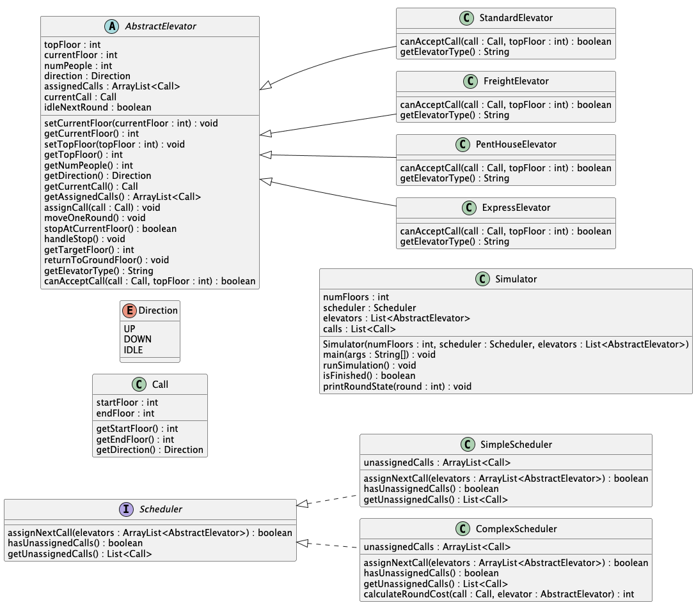

I am a Computer Science student at the University of San Diego and a U.S. Air Force veteran with experience in high-reliability, time-sensitive operational environments. My background in nuclear command and control has trained me to prioritize precision, accountability, and disciplined execution.
Technically, I focus on backend development and systems-level engineering with particular interest in how low-level design decisions influence performance, scalability, and long-term maintainability in larger systems. I approach problems by clarifying constraints, defining clean interfaces, and designing components that remain predictable as systems grow in complexity.
Beyond coursework, I actively build independent projects that explore simulation modeling, real-time computer vision, automation systems, and reliability-focused design. I am drawn to environments where correctness, stability, and thoughtful architecture matter as much as feature delivery.
Long term, I aim to work on infrastructure, distributed systems, or performance-critical applications where engineering discipline directly influences system integrity.
Education
University of San Diego
- Programming Abstractions and Methods
- Advanced Computational Problem Modeling
- Object-Oriented Software Design
- Computer Networking
- Discrete Mathematics
- Linear Algebra
- Engineering Probability & Statistics
- Calculus I/II
University of Maryland Global Campus
Community College of the Air Force
Skills
Core Topics
Tools
Frameworks & Platforms
Languages
Software Engineering Projects
Deployed Systems
Academic Projects
Fitness Tracker Web Application
{kind=link}
{kind=link}
{kind=link}
{kind=link}
{kind=link}
{kind=link}
Problem
Workout tracking was previously done through Excel spreadsheets, which created inconsistent data entry, poor mobile usability, repetitive logging, and limited visibility into progress, participation, and long-term training trends.
Approach
- Replaced the spreadsheet workflow with a structured full-stack web application
- Used daily logging as the primary source of truth and generated weekly/monthly insights from it
- Built responsive forms, authenticated profiles, role-based admin views, and alias-based account handling
What I Built
- React single-page application with responsive component-based UI
- Supabase backend with PostgreSQL database, authentication, and Row Level Security
- Dynamic workout logging for strength, cardio, and rest days with context-aware form behavior
- Weekly and monthly review pages that compute analytics from daily logs
- Admin dashboard for participation tracking, team metrics, and role management
- Alias-based profile system allowing multiple emails to resolve to one logical account
Results / Impact
- Replaced a manual Excel workflow with a deployed web platform
- Improved mobile usability and reduced repetitive data entry
- Created more reliable progress tracking through automated analytics and standardized data
- Enabled team-level oversight with admin dashboards and participation visibility
What I Learned
- How product design, data modeling, and user workflow decisions shape the quality of the final system
- How authentication, session handling, and RLS policies become major engineering work in real apps
- How to iteratively evolve a practical tool from a simple spreadsheet replacement into a fuller platform
Quiet Hours Waiver Workflow
Problem
Quiet hours waiver requests relied on a manual process that made submission, routing, approval, and notification slower and harder to track. The workflow lacked a centralized system for visibility, consistent approvals, and reliable communication between requestors and decision-makers.
Approach
- Designed a SharePoint-based workflow to centralize waiver intake and tracking
- Used Power Apps to create a structured front-end submission experience
- Used Power Automate to route requests, trigger approvals, and send notifications
- Integrated Outlook so stakeholders received updates and approval actions through email
What I Built
- SharePoint list and workflow structure to manage quiet hours waiver requests
- Power Apps form for standardized request submission
- Power Automate approval flow for routing, status changes, and notifications
- Outlook-connected messaging to keep requestors and approvers informed throughout the process
Results / Impact
- Reduced manual coordination and improved consistency of waiver processing
- Created a clearer approval trail and better visibility into request status
- Improved turnaround and communication through automation and email integration
What I Learned
- How to translate an operational approval process into a structured software workflow
- How SharePoint, Power Apps, Power Automate, and Outlook can be integrated into a usable internal system
- How workflow design improves reliability, transparency, and process efficiency
Personnel Readiness Dashboard – U.S. Air Force
Problem
Personnel readiness information was spread across multiple categories, making it difficult for leadership to quickly assess status, identify upcoming issues, and report accurate information.
Approach
- Designed a centralized SharePoint list structure to organize readiness data in one place
- Used bucket views to improve oversight and make personnel status easier to review
- Self-taught JSON formatting to create a more user-friendly interface and visual status logic
What I Built
- SharePoint-based dashboard to track personnel readiness and reporting data
- Color-coded status indicators that changed from green to yellow to red as items approached due dates
- Tracking fields for security clearance, reserve AT days, certifications, fitness requirements, and medical readiness
- Views that allowed leadership to review, manage, and report personnel status more efficiently
Results / Impact
- Improved visibility into readiness across personnel categories
- Made leadership reporting faster and more accurate
- Reduced manual review effort by surfacing risk areas visually
What I Learned
- How to self-teach JSON formatting to extend SharePoint usability
- How interface design and visual logic improve operational decision-making
- How to structure tracking systems for both usability and reporting accuracy
TCP Music Streaming System
Problem
Needed to design and implement a reliable music streaming protocol from scratch, where a C++ server could accept client connections, handle song requests, and deliver audio data correctly over TCP without using any existing streaming libraries.
Approach
- Designed a custom application-layer protocol on top of TCP defining message types, framing, and sequencing for control and data traffic
- Built the server in C++ to handle connection setup, catalog lookup, and chunked audio delivery
- Built the Java client to connect, browse available songs, issue requests, and reassemble received data
- Handled partial reads, framing edge cases, and connection teardown cleanly on both sides
What I Built
- C++ TCP server with socket setup, client accept loop, and request dispatch
- Custom wire protocol with defined message headers, type codes, and payload framing
- Java client with connection management, catalog display, and audio data reassembly
- Reliable delivery logic handling buffering, partial reads, and graceful shutdown
Results / Impact
- Successfully streamed audio between a C++ server and Java client over a real TCP connection
- Protocol correctly handled framing, sequencing, and teardown across all tested cases
- Reinforced how transport-layer guarantees and application-layer protocol design interact in practice
What I Learned
- How to design a stateful application protocol on top of a stream-oriented transport
- Why framing, message boundaries, and partial I/O handling are non-trivial in real socket programming
- How cross-language systems (C++ server, Java client) require careful agreement on wire format and byte ordering
DC Draft Simulation System
Problem
Congressional stock trading data is difficult to explore in a way that feels interactive or comparative. The goal was to turn real trade disclosures into a fantasy draft-style simulation where users could draft politicians, run a season, and compare team performance through weekly matchups.
Approach
- Designed the project around object-oriented classes for politicians, trades, teams, matches, weeks, seasons, drafting, and final results
- Used test-driven development to build core behavior incrementally and keep the simulation logic easier to verify
- Applied the Strategy Pattern so scoring logic can be changed without rewriting the draft, match, team, or season classes
- Separated CSV parsing, politician creation, draft management, season simulation, and output formatting into focused classes
What We Built
- CSV data pipeline that parses congressional trades into Trade objects and groups them into Politician profiles with TradeHistory
- Interactive draft manager that filters available politicians by party and enforces roster limits
- Team model that stores drafted politicians, calculates weekly score, and identifies MVP and bust performers
- Match, Week, and Season classes that simulate head-to-head results, standings, and champion selection
- FinalResults output class that prints the champion, standings, weekly results, and team rosters
Results / Impact
- Created a runnable simulation that connects real CSV data to draftable politicians and season results
- Improved maintainability by moving responsibilities into focused classes instead of one large simulator
- Used automated tests and GitHub Actions to catch issues in parsing, scoring, drafting, and simulation behavior
What I Learned
- How to translate messy real-world CSV data into structured domain objects
- How TDD helps clarify responsibilities before implementation grows too large
- How design choices like defensive copying, enum-based results, and strategy interfaces affect maintainability and testability
- How GitHub pull requests, code review, Checkstyle, SpotBugs, and CI support cleaner team-based development
Elevator Simulation System
Problem
Model a realistic elevator system where multiple elevator types follow different constraints while responding to calls across a building. The challenge was designing a system that correctly handles scheduling, movement, and state changes over time while keeping the design clean and extensible.
Approach
- Designed the system around object-oriented principles with a shared abstract elevator base class
- Separated scheduling logic behind a scheduler interface with both simple and complex strategies
- Simulated the system in discrete rounds where calls are assigned and elevators update state over time
What I Built
- Abstract elevator framework handling shared state and movement behavior
- Four specialized elevator types: standard, freight, penthouse, and express
- Two scheduling strategies for assigning calls based on order or efficiency
- Central simulator coordinating rounds, assignments, and system state updates
{kind=link}

Results / Impact
- Created a flexible system that supports multiple elevator behaviors without changing core logic
- Demonstrated how different scheduling strategies impact overall system efficiency
- Ensured consistent and correct elevator movement and call handling across all scenarios
What I Learned
- Applying abstraction, inheritance, and polymorphism to model real-world systems
- Designing systems that follow SOLID principles and remain easy to extend
- Structuring simulations that balance correctness, clarity, and maintainability
Birthday Paradox Simulation Engine
Problem
The birthday paradox demonstrates that collisions occur far sooner than intuition suggests. The goal was to experimentally validate the theoretical probability curve and understand how quickly real simulations converge toward expected results.
Approach
- Used Monte Carlo simulation to repeatedly generate randomized birthday sets
- Compared experimental collision rates against theoretical probability values
- Structured the simulation to run large trial batches efficiently
What I Built
- Reusable simulation engine for large probabilistic experiments
- Collision detection logic optimized for repeated trials
- Output system for analyzing convergence behavior across group sizes
Results / Impact
- Verified that experimental results converge closely to theoretical probabilities
- Demonstrated how rapidly collision likelihood increases with group size
What I Learned
- How probabilistic systems behave under repeated randomized trials
- Designing simulation frameworks that remain efficient at scale
Real-Time Multi-Modal Control System
Problem
Needed a reliable way to control a grid-based game using different input methods while keeping response time smooth and avoiding accidental triggers.
Approach
- Built multiple input pipelines (keyboard + vision-based signals) with consistent action mapping
- Added thresholds, debouncing, and state tracking to reduce jitter and false positives
- Optimized the processing loop to maintain real-time responsiveness
What I Built
- Gesture, color, finger, and head-tracking controllers using OpenCV + MediaPipe landmarks
- Unified controller interface to translate inputs into discrete game moves
- Debug tooling and tuning controls to iterate quickly on detection stability
Results / Impact
- Enabled multiple control modes that can be swapped without changing game logic
- Improved usability by stabilizing inputs and reducing unintended actions
What I Learned
- Designing real-time pipelines where latency and noise directly affect user experience
- How to tune computer-vision thresholds and state logic for reliable interaction
Distributed Time Sync Protocol
Problem
Needed a low-level client–server protocol to exchange time-stamped messages reliably and quantify clock differences across networked endpoints.
Approach
- Implemented a custom TCP protocol with explicit message framing
- Used network byte order conversions to ensure cross-platform correctness
- Handled partial reads/writes to maintain reliability under real socket behavior
What I Built
- TCP server (bind/listen/accept) and client (connect) with request/response flow
- Serialization/deserialization logic using htonl/ntohl and fixed-size fields
- Time-delta computation to analyze synchronization error
Results / Impact
- Produced repeatable timing measurements and validated protocol correctness end-to-end
- Improved understanding of TCP realities: framing, buffering, and partial I/O
What I Learned
- Why protocol design needs explicit framing and defensive I/O handling
- How small low-level choices (endianness, buffering) impact correctness
Finite-State Code Analyzer
Problem
Needed accurate code metrics (SLOC/statement counts) across many files while correctly handling comments, strings, and other edge cases that break naive line-counting.
Approach
- Designed a deterministic finite automaton (DFA) with explicit parsing states
- Processed input as a character stream and updated state per character
- Aggregated results across files with predictable, repeatable counting rules
What I Built
- State machine for normal code, string literals, char literals, and comment modes
- Multi-file CLI tool that reports per-file and total metrics
- Edge-case handling for escapes, nested patterns, and tricky transitions
Results / Impact
- Generated consistent metrics that align with language-aware parsing rules
- Reduced miscounting caused by comment/string corner cases
What I Learned
- How DFAs make parsers predictable, testable, and easier to debug
- Why correctness often comes from explicitly modeling edge cases
Binary Record Decoder
Problem
Needed to decode compact binary records into human-readable fields while respecting memory layout, alignment, and endianness constraints.
Approach
- Used fixed-size reads and validated record boundaries
- Applied masking and shifting to extract packed fields safely
- Verified assumptions about padding/alignment to avoid corrupted decoding
What I Built
- Binary reader that ingests records with fread into structured buffers
- Bit-field / bit-mask decoding layer for compact encodings
- Readable decoded output to support inspection and debugging
Results / Impact
- Correctly reconstructed fields from packed binary layouts
- Improved reliability by explicitly handling layout and endianness concerns
What I Learned
- How low-level representation (bits/bytes) drives correctness in data systems
- Defensive decoding practices to prevent subtle corruption bugs
Data Structures Library
Problem
Needed foundational collection structures with predictable behavior, plus a way to validate correctness and measure performance against expected Big-O characteristics.
Approach
- Implemented data structures from first principles using generics
- Wrote unit tests targeting invariants and edge cases
- Benchmarked operations to compare real runtime against theoretical expectations
What I Built
- Generic array-backed and linked list implementations
- Core operations (insert/remove/search/iterate) with clean APIs
- JUnit test suite and simple benchmarking harness using System.nanoTime
Results / Impact
- Validated correctness across boundary conditions (empty, single-item, large inputs)
- Observed how implementation choices affect constant factors and practical performance
What I Learned
- How to connect data-structure theory to real performance measurements
- Testing strategies that catch edge-case failures early
Search Structures & Heaps
Problem
Needed correct implementations of search structures and priority queues while understanding the tradeoffs between average-case performance and worst-case structural behavior.
Approach
- Implemented BST and heap operations with explicit invariants
- Tested for edge cases (duplicates, sorted inputs, degenerate trees)
- Measured behavior under different input distributions
What I Built
- BST insertion/search with analysis of balanced vs degenerate growth
- Binary heap add/poll with bubble-up / bubble-down logic
- Test cases verifying ordering guarantees and correctness under stress
Results / Impact
- Demonstrated expected performance patterns and failure modes based on input shape
- Built intuition for when trees degrade and why heaps maintain predictable bounds
What I Learned
- How invariants simplify reasoning and testing of complex structures
- Why “good average case” can still fail without considering input distributions
Military Service
Senior Nuclear Command and Control Operations Specialist
- Improved mission-support workflows in a classified environment and built a fitness tracking platform that brought structured data collection, participation visibility, and more consistent reporting to unit readiness efforts.
Senior Command and Control Operations Specialist
- Combined operational coordination with practical systems improvement, helping reduce fuel waste across multinational missions while also introducing workflow automation that made approvals, communication, and task tracking faster and more reliable.
- Managed the stand-up of a Unified Command Post at Ramstein Air Base, integrating multiple systems into a unified dashboard to create a clearer operational picture, improve coordination across U.S. Air Forces Europe and multinational partners, and streamline command and control operations.
- Worked above my grade level in a senior-position environment, refining command-center processes and maintaining visibility on special operations activity across Africa to support faster, better-informed decisions in a high-pressure joint mission space.
Nuclear Command and Control Operations Specialist
- Managed secure communications and mission-tracking systems that supported multinational flight operations, helping reduce coordination friction and keep mission information accurate, current, and dependable in a sensitive operating environment.
Command and Control Operations Specialist
- Improved both mission coordination infrastructure and emergency communication reach in a high-tempo environment, from hands-on communications system setup to rebuilding the base notification program so alerts were clearer, easier to send, and far more likely to reach the people who needed them.